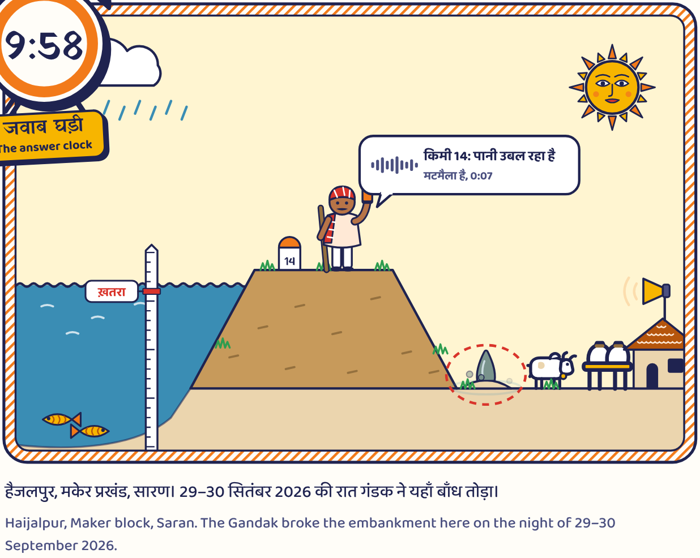
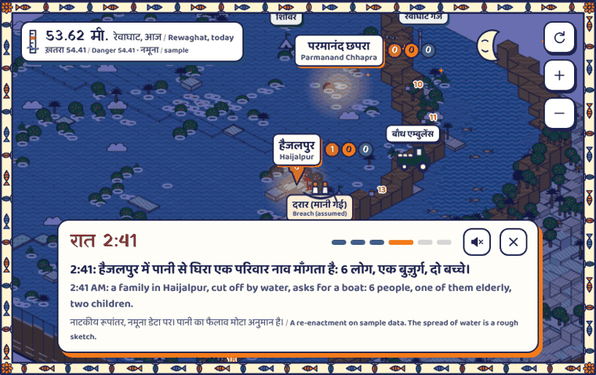

छात्र परियोजना · Student project · not adopted by any department
तटबंध पर हर ख़तरे का एक ज़िम्मेदार, एक समय-सीमा, और एक अगला व्यक्ति।Every warning on Bihar's flood embankments gets an owner, a deadline and a next person.
A pilot proposal for the Water Resources Department, the Disaster Management Department and BSDMA · October 2026

हैजलपुर (मकेर, सारण) और शीतलपुर (बैकुंठपुर, गोपालगंज) में गंडक के तटबंध टूटे।Gandak breaches at Haijalpur, Saran and Sheetalpur, Gopalganj.
अधिकारियों ने "कई जगह रिसाव और पाइपिंग" की बात कही।Officials cited "seepage and piping at several locations" before the breaches.
4 अक्टूबर: सात अभियंता निलंबित; कुछ "टूटान स्थल छोड़ गए"।4 October: seven engineers suspended; some "left the breach sites".
तटबंध टूटने से पहले चेतावनी देता है। चेतावनी के पास जाने की कोई जगह नहीं है।The bank warned before it broke. The warning had nowhere to go.
Sources: Rozana Spokesman (PTI) 30 Sep; Daily Excelsior and Aaj Tak, 4–5 Oct 2026. The department counted 408 breaches from 1987 to 2018 (Dialogue Earth).
हर क़दम उसी समय दर्ज होता है, और कोई उसे बाद में बदल नहीं सकता।Every step is recorded as it happens, and nobody can change it later. AWS Step Functions in Mumbai runs the clock.
गाँव का नाम भेजें, आज की सरकारी गेज रीडिंग हिंदी में पाएँ, स्रोत और समय के साथ।Send a village name; get today's official gauge reading in Hindi, with source and time.
2025 Kosi survey: 671 of 1,081 families stayed even after hearing the water was rising, fearing for animals and belongings (Down To Earth). So each warning asks for cheap steps that protect exactly those.
एक बटन से मदद: कितने लोग, बुज़ुर्ग, बच्चे, नाव या दवा।One button to ask for help.
सबसे पास की माँग पहले। "मैं जा रहा हूँ" से 20 मिनट की घड़ी; देर हो तो अगली टीम।Nearest first; a 20-minute clock; late means the next team.
डूबा इलाक़ा, ख़तरे में घर, खुली माँगें, टीमें, गाँवों की तैयारी।Flooded area, homes at risk, requests, teams, readiness.

Built from open satellite data on AWS (Copernicus DEM, ESA WorldCover, Sentinel-2). The public sees counts per village; exact locations go only to relief teams and the district. Here: the 29–30 September night, re-enacted on sample data.
| व्यवस्था · System | पढ़ता है · Reads | लौटाता है · Hands back |
|---|---|---|
| FMISC गेज सेवा (WRD) | जल स्तर, ख़तरे का निशान, रुझान · levels every 3 h | किलोमीटर-वार घटनाएँ · incidents by km |
| SACHET (NDMA), CWC | नदी चेतावनियाँ, हर 15 मिनट · CAP alerts | CAP 1.2 मसौदा, "Exercise" · drafts the district sends |
| बाढ़ संघर्षात्मक बल | क्षेत्र का रोस्टर · the zone's roster | घड़ी की कड़ी में एक क़दम · a step in the climb |
| IRS, ज़िला नियंत्रण कक्ष | हेल्पलाइन कॉल · helpline calls | IRS फ़ॉर्म 001 ब्रीफ़िंग · the incident briefing |
| आपदा संपूर्ति (DMD) | - | टूटान के पीछे के गाँव-वार्ड, LGD कोड के साथ · relief lists (format to confirm) |
AWS मुंबई, MeitY से सूचीबद्ध क्षेत्र; 180 दिन के लॉग (CERT-In)।Data in India; logs kept 180 days.
DPDP अधिनियम 2023: मदद में नाम नहीं, नंबर हैश में, आम लोगों को सिर्फ़ गिनती।No names, hashed numbers, public counts only.
AI सिर्फ़ मसौदा लिखता है; प्राथमिकता कोई घटा नहीं सकता।AI only drafts; nobody can lower a priority.
बाँध प्रहरी: हर चेतावनी का जवाब।Every warning gets an answer. · github.com/its-aryansingh/bandh_prahari · Contact: [name, phone, email]